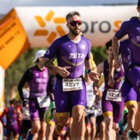

David Lizandra Mora
"Liz"
ROL: 2º Entrenador del Club / Preparador Fisico
Edad: 30 años
Club: CD Aquatic Campanar
Biografía
David comenzó a nadar desde muy pequeño, demostrando una gran pasión por la natación adaptada. A lo largo de su carrera ha destacado por su técnica y constancia...
Logros Deportivos
- 6º lugar de su deportista Vicente Gil
- Entrenadora Internacional con el equipo Español Jovenes Promesas
- üèä Participaci√≥n en el Circuito de Aguas Abiertas FNCV